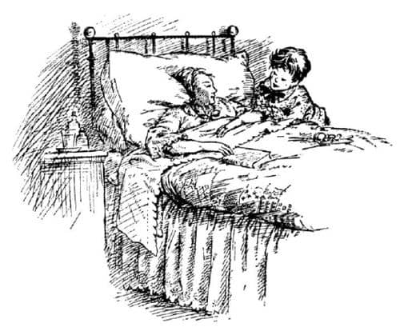

Bu Hikâyenin Sonu ve Diğer Hikâyelerin Başlangıcı
“Ben sizinle beraberken yüzüklere ihtiyacınız yok” dedi Aslan. Çocuklar gözlerini kırpıştırıp etraflarına baktılar. Bir kez daha Dünyalar Arasındaki Orman’daydılar. Andrew Dayı çimlerin üzerinde uzanmış hâlâ uyuyordu. Aslan yanı başlarında durmaktaydı.
“Gelin” dedi Aslan, “geri gitmenizin zamanı. Fakat ilk önce iki şeyi görmelisiniz; bir uyarı ve bir emir. Buraya bakın çocuklar.” Baktıklarında çimenlik alanda dibi yine çim olan kuytu ve kuru, küçük bir çukur gördüler.
“Siz geçen defa buradayken” dedi Aslan, “bu çukur bir göletti ve siz ona daldığınızda, ölmekte olan bir güneşin Charn harabeleri üzerinde parladığı dünyaya gelmiştiniz. Şimdi gölet yok artık. O dünyanın sonu geldi, sanki hiç var olmamış gibi. Adem ve Havva’nın ırkı bunu uyarı olarak kabul etsin.”
“Peki, Aslan” dedi iki çocuk. Fakat Polly ekledi, “Bizim dünyamızın durumu o dünya kadar kötü değil, değil mi Aslan?”
“Henüz değil, Havva’nın kızı” dedi Aslan. “Henüz değil. Fakat onun gibi oluyorsunuz. Irkınızdan kötü niyetli birinin, ‘Korkunç Söz’ gibi şeytani bir sırrı bulup tüm yaşayan şeyleri mahvetmek için kullanıp kullanmayacağı kesinlikle belli değil. Ve yakında, çok yakında sizler yaşlı birer hanım ve bey olmadan, dünyanızdaki büyük devletler, mutluluk, adalet ve merhamete İmparatoriçe Jadis kadar bile önem vermeyen diktatörler tarafından yönetilmeye başlayacak. Uyarım buydu. Şimdi emre gelelim. İlk fırsatta senin bu dayından sihirli yüzükleri alın ve gömün ki onları bir daha hiç kimse kullanamasın.”
Aslan bu sözleri söylerken iki çocuk da onun yüzüne bakıyorlardı. Ve aniden (nasıl olduğunu asla anlayamamışlardı) Aslan’ın yüzü, içinde yüzdükleri altın dalgalı bir denize dönüşmüştü ve onları öylesine bir tatlılık ve enerji sarmaladı ki kendilerini daha önce hiç bu kadar mutlu, akıllı, iyi ya da canlı ve uyanık hissetmemişlerdi. Bu anın hatırası daima içlerinde yaşadı, öyle ki yaşamları boyunca üzgün, korkmuş ya da öfkeli oldukları zamanlarda bu altın gibi iyilik düşüncesinin hâlâ orada, çok yakında, bir köşenin ya da bir kapının arkasında olduğu duygusuna kapılacaklar ve her şeyin iyi olacağına yürekten inanacaklardı. Bir dakika sonra üçü birden (Andrew Dayı artık uyanıktı) Londra’nın gürültüsüne, sıcağına ve hoş kokularına daldılar.
Ketterley’lerin kapısının önündeki kaldırımdaydılar. Cadı’nın, Arabacı’nın ve atın yokluğu dışında, her şey aynen bıraktıkları gibiydi. Bir parçası olmayan lamba direği, at arabasının enkazı ve kalabalık oradaydı. İnsanlar hâlâ konuşuyor ve yaralı polislerin yanına eğilmiş “Kendine geliyor”, “Kendini nasıl hissediyorsun, dostum?” ya da “Ambulans hemen geliyor” gibi şeyler söylüyorlardı.
“Aman Tanrım” diye düşündü Digory, “Bu koca macera hiç zaman almamış.”
Kalabalık bir grup deli gibi Jadis’i ve atı arıyordu. Kimse çocuklara dikkat etmiyordu, çünkü hiçbiri onların gidip geri geldiğini fark etmemişti. Andrew Dayı’ya gelince, giysilerinin durumu ve yüzüne bulaşmış balla kimse tarafından tanınacak hali yoktu. Şanslarına evin ön kapısı açıktı ve hizmetçi (ne güzel bir gün geçiriyordu) kapıda durmuş eğlenceyi seyrediyordu. Böylece çocuklar kimsenin soru sormasına fırsat vermeden Andrew Dayı’yı kolayca içeriye soktular.
Andrew Dayı önlerinden hızla merdivenlere koştu. Çocuklar ilk önce onun tavan arasına koşturduğunu ve geriye kalan yüzükleri saklamak istediğini sandılar. Fakat telaşlanmaya gerek yoktu. Onun düşündüğü şey dolabındaki şişeydi ve yatak odasına girip kapıyı da kilitlemişti. Yeniden odadan çıktığında (uzun zaman sonra) sabahlıklarını giymişti ve doğruca tuvalete gitti.
“Sen diğer yüzükleri alabilir misin, Polly?” dedi Digory. “Ben annemin yanına gitmek istiyorum.”
“Tamam, sonra görüşürüz” dedi Polly ve tavan arası merdivenlerine tırmanmaya başladı.
Digory soluklanmak için bir dakika durakladı ve sonra yavaşça annesinin odasına girdi. Annesi, daha önce birçok defa gördüğü gibi, sırtı yastıklarla desteklenmiş, bakınca insanı ağlatacak kadar zayıf ve soluk bir yüzle orada yatıyordu. Digory, Yaşam Elması’nı cebinden çıkardı.
Cadı Jadis’in bizim dünyamızda kendi dünyasındakinden farklı göründüğü gibi, dağdaki bahçenin meyvesi de farklı görünüyordu. Yatak odasında elbette her türden renkli şeyler vardı; yatağın üzerindeki yatak örtüsü, duvar kâğıdı, pencereden içeri giren ışık ve annesinin zarif, açık mavi hırkası. Fakat Digory elmayı cebinden çıkarır çıkarmaz tüm bunlar sanki neredeyse renklerini kaybetmişti. Her şey, günışığı bile, soluk ve donuk görünüyordu. Elmanın parıltısı tavanda garip ışık oyunları yapıyordu. Başka hiçbir şeye bakmaya değmezdi; başka bir şeye bakmak mümkün değildi. Ve Gençlik Elması sanki odada cennete açılan bir pencere varmış gibi kokuyordu.
“Oh, canım, ne güzel” dedi Digory’nin annesi.
“Lütfen, bu elmayı ye anne” dedi Digory.
“Doktor ne der bilemem” diye cevapladı annesi. “Fakat gerçekten – yiyebileceğimi hissediyorum.”
Digory elmayı soydu, böldü ve parça parça annesine verdi. Ve annesi elmayı bitirir bitirmez gülümsedi, başını yastığa gömdü ve uykuya daldı: Gerçek, doğal ve hafif bir uykuydu bu ve Digory’nin de bildiği gibi, annesinin bu dünyada en çok istediği şeydi. Üstelik iğrenç ilaçların yardımı da yoktu. Digory annesinin yüzünün şimdi farklı göründüğüne emindi. Eğilip annesini yavaşça öptü ve elmanın eşeleğini de alıp, odadan kalbi çarparak çıktı. Günün geri kalan kısmında etrafındaki şeylere bakıp her şeyin ne kadar sıradan ve büyüden yoksun olduğunu gördükçe umudu kırılıyordu, fakat Aslan’ın yüzünü hatırladığı zaman yine umutlanıyordu.

O akşam elmanın eşeleğini arka bahçeye gömdü.
Ertesi sabah doktor alışılmış ziyaretini yaptığında, onu dinlemek üzere merdivenin parmaklıklarından aşağı eğildi. Doktorun, Letty Teyze’yle birlikte odadan çıkarken şöyle dediğini duydu:
“Bayan Ketterley, tüm doktorluk hayatımda karşılaştığım en olağanüstü bir durum bu. Bu – bu bir mucize gibi. Küçük çocuğa şimdilik bir şey söylemeyin; boşu boşuna umutlandırmayalım. Fakat bence—” sonra sesini alçalttığı için işitmek güçleşti.
O gün öğleden sonra bahçeye çıkıp Polly’ye ıslıkla gizli işareti verdi (Polly bir önceki gün gelememişti).
“Ne haber?” dedi Polly, duvardan bakarak. “Yani, annen nasıl?”
“Sanırım – sanırım her şey iyi olacak” dedi Digory. “Fakat eğer bir sakıncası yoksa şimdilik bunun hakkında konuşmak istemiyorum. Yüzüklere ne oldu?”
“Hepsini aldım” dedi Polly. “Bak, görüyor musun, eldiven giyiyorum. Haydi gömelim.”
“Evet, gömelim. Dün elmanın eşeleğini gömdüğüm yeri işaretlemiştim.”
Sonra Polly duvardan atladı ve beraberce oraya gittiler. Fakat Digory’nin orayı işaretlemesine gerek olmadığını hemen anladılar. Eşeleğin gömüldüğü yerde şimdiden bir fidan bitmeye başlamıştı. Narnia’da olduğu gibi, gözle görülür bir şekilde büyümüyordu, ama toprağın epeyce üstüne çıkmıştı. Küçük bir el küreği bulup kendilerininki de dahil olmak üzere, bütün yüzükleri daire şeklinde ağacın etrafına gömdüler.
Bundan bir hafta sonra Digory’nin annesinin iyileşeceği kesinleşmiş, ondan dört gün sonra da bahçede oturmaya çıkabilmişti. Ve bir ay sonra bütün ev bambaşka bir yer olmuştu. Letty Teyze Digory’nin annesinin sevdiği her şeyi yapıyordu; pencereler açılmış, küflü perdeler, odalar aydınlansın diye açılmıştı, her yer taze çiçeklerle doluydu, yiyecek daha iyi şeyler vardı, eski piyanonun akordu yapılmıştı ve Digory’nin annesi yeniden şarkı söylemeye başlamıştı. Digory ve Polly ile öyle oyunlar oynuyordu ki Letty Teyze “Üçünüz içinde en büyük bebeğin sen olduğunu söylemeliyim, Mabel” diyordu.
Bir şey kötü gitmeye başlarsa, bir süre için her şeyin daha da kötüye gittiğini görürsünüz; fakat o şey yeniden iyi gitmeye başladığında genellikle her şey çok daha iyi olur. Yaklaşık altı haftalık bu güzel yaşamdan sonra, Digory’nin Hindistan’daki babasından, içinde harika haberlerin olduğu bir mektup geldi. Yaşlı Büyükdayı Kirke ölmüştü ve bu, görünürde, babasının çok zengin olduğu anlamına geliyordu. Emekliye ayrılıp sonsuza kadar kalmak üzere Hindistan’dan eve dönüyordu. Digory’nin tüm hayatı boyunca duyduğu ancak hiç görmediği taşradaki büyük ev şimdi onların olacaktı; zırhlar, ahırlar, köpek evleri, nehir, park, seralar, asma limonluk, ormanlar ve onların arkasındaki dağlar. Digory sonsuza kadar mutlulukla yaşayacaklarına sizin kadar emindi. Ama belki siz bir iki şeyi daha bilmeyi istersiniz.
Polly ve Digory her zaman iyi arkadaş olarak kaldılar. Polly her tatilde kalmak üzere onların taşradaki güzel evlerine gitti ve orada ata binmeyi, yüzmeyi, süt sağmayı, ekmek pişirmeyi ve dağa tırmanmayı öğrendi.
Narnia’da hayvanlar barış ve mutluluk içinde yaşadılar ve ne Cadı ne de başka bir düşman yüzlerce yıl boyunca bu hoş ülkeye bir sorun çıkardı. Kral Frank, Kraliçe Helen ve çocukları Narnia’da mutlulukla yaşadılar ve ikinci oğulları Archenland’e kral oldu. Oğlanlar su perileriyle, kızlar da orman ve nehir tanrılarıyla evlendiler. Cadı’nın (bilmeden) diktiği lamba Narnia ormanında gece gündüz ışıldadı, büyüdüğü yer Fener Çoraklıkları diye adlandırıldı ve yıllarca sonra, bizim dünyamızdan bir başka çocuk karlı bir gecede Narnia’ya geldiğinde ışığın hâlâ yandığını gördü. Bu macera bir bakıma size söylediklerimle bağlantılıdır.
Bu bağlantı şudur. Digory’nin arka bahçeye gömdüğü elmadan çıkan fidan yaşayıp büyüyerek iyi bir ağaç oldu. Bizim dünyamızın toprağında, Aslan’ın sesinden ve Narnia’nın taze havasından uzakta büyüdüğünden, Digory’nin annesini iyileştirdiği gibi, ölmek üzere olan başka bir kadını iyileştirecek elmalar vermedi, ama İngiltere’deki bütün elmalardan daha güzel elmalar verdi. Bunlar büyülü olmamasına karşın herkese çok iyi geliyordu. Fakat içten içe, özsularının derinliklerinde (deyim yerindeyse), ait olduğu Narnia’daki öbür ağacı asla unutmadı. Bazen hiç rüzgâr yokken bile anlaşılmaz bir şekilde sallanırdı; sanırım bu sırada Narnia’da kuvvetli rüzgârlar eserdi ve İngiliz ağacı, o anda Narnia ağacı güçlü bir lodos fırtınasında sallandığı için titrerdi. Bu nasıl olduysa, ağacın hâlâ büyülü olduğu sonradan ispatlandı. Çünkü Digory orta yaşlı bir adamken (ve ünlü bir bilgin, profesör ve o zamanların büyük gezginiyken) ve Ketterley’lerin eski evi ona aitken, İngiltere’nin güneyinde ağacı deviren büyük bir fırtına olmuştu. Digory ağacın basitçe yakılmak üzere parçalanmasına dayanamadı ve odunun bir kısmından bir dolap yaptırarak taşradaki büyük eve yerleştirdi. O, bu dolabın büyülü özelliklerini keşfedemedi ama bir başkası keşfetti. Bu, bizim dünyamızla Narnia arasındaki tüm geliş ve gidişlerin başlangıcıydı ve siz bunları diğer kitaplarda okuyabilirsiniz.
Digory ve ailesi büyük taşra evine yerleşmeye gittiklerinde Andrew Dayı’yı da yanlarında götürdüler, çünkü Digory’nin babası “Yaşlı adamı yaramazlıktan uzakta tutmayı denememiz gerekiyor. Zavallı Letty’nin ona sürekli bakmak zorunda olması da haksızlık” demişti. Andrew Dayı yaşadığı sürece yeniden büyücülüğü denemedi. Dersini almıştı ve yaşlandığında, önceleri olduğundan daha iyi ve daha az bencil bir adam oldu. Fakat her zaman ziyaretçilerini yalnız başına bilardo odasında kabul eder ve onlara, Londra’da beraberce araba turu yaptığı, yabancı bir soylu olan esrarengiz kadın hakkında hikâyeler anlatırdı. “Şeytani bir mizacı vardı” derdi. “Fakat çok harika bir kadındı efendim, harika bir kadın.”
C.S. Lewis’in önerdiği okuma sırasıyla Narnia Günlükleri:
Büyücünün Yeğeni
Aslan, Cadı ve Dolap
At ve Çocuk
Prens Caspian
Şafak Yıldızı’nın Yolculuğu
Gümüş Sandalye
Son Savaş